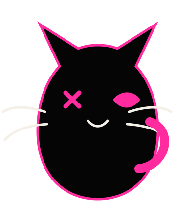

個人調査票
- 氏名
- 福田 太陽
- ふりがな
- ふくだ たいよう
- 生年月日
- 2004年2月19日
- 年齢
- 22歳
- 性別
- 男
- 所属
- 東京電機大学大学院
工学研究科 情報通信工学専攻

EVIDENCE A
技術が、未来を切り開く。
研究・Web制作・ものづくりを通して、誰かの心に残る体験を形にするエンジニア志望です。
自己紹介
学歴
技術スキル
データ処理、評価指標の算出、研究コードの実装で使用。
深層学習モデルの学習・推論・評価で使用。
プログラミング基礎、アルゴリズム、オブジェクト指向を学習。
画面構成、レイアウト、デザイン調整で使用。
画面操作、状態管理、コンポーネント設計を学習中。
API、ルーティング、データベース管理を学習中。
研究コードや制作物の変更履歴管理、公開で使用。
電波伝搬シミュレーションデータの作成、地理情報処理で使用。
少数観測点からの電波マップ推定
Python、PyTorch、QGIS、Wireless InSiteを用いて、少数の観測点から高解像度な受信電力マップを推定する研究に取り組んでいます。
Webアプリ制作
HTML、CSS、JavaScript、React、Node.js、Express、MongoDBを用いたWebアプリ制作を学習しながら、個人開発に取り組んでいます。
自己PR
私は、未知の技術に対しても自分で調べながら手を動かし、形にする力があります。研究では、PythonやPyTorchを用いた深層学習モデルの実装に加え、Wireless InSiteやQGISを用いたデータ作成、評価指標の算出、結果の可視化まで一連の流れを経験しました。
最初からすべてを理解していたわけではありませんが、エラーの原因を一つずつ確認し、必要な知識を学びながら改善を進めてきました。今後も、技術を学ぶだけで終わらせず、実際に使えるものとして形にする姿勢を大切にしたいと考えています。
制作物・GitHub
少数観測点から高解像度な受信電力マップを推定する研究。
フロントエンド、バックエンド、API連携、DB管理を学習しながら制作中。
制作物は今後追加予定です。
お問い合わせ
ご連絡・ご相談はこちらからお願いします。研究、Web制作、エンジニア職に関するお話をお待ちしています。